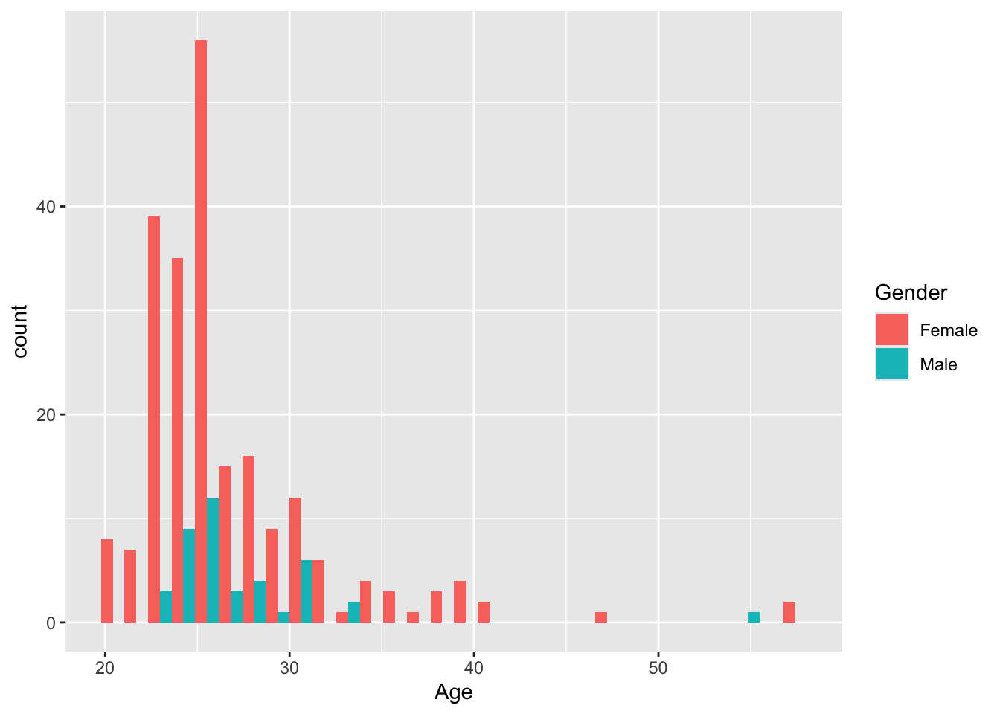
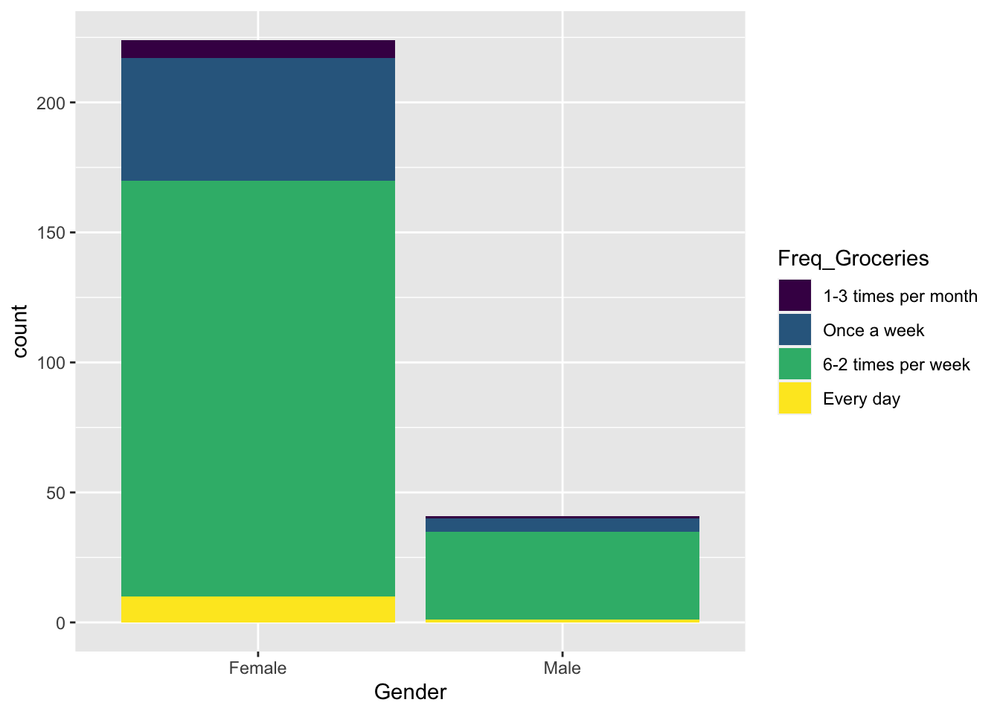

Chapter 10 Intro to large survey data
The data used in this chapter are based on surveys conducted during earlier iterations of the courses Food Consumer Research and Meal Consumer Research.
Large survey data can be collected using SurveyXact. There are tools (packages for R) which can import SurveyXact outputs directly, while we do not go through these here, googl’ing a bit may be helpful. Alternatively, the SurveyXact files can be exported to .xlsx files and imported as indicated in How to import data.
Here we have included the data in the data4consumerscience package ready for use.
10.0.1 Looking at the data and checking formating
The functions head(), View(), and str() can be used to get an overview of formating. See Looking at the imported elements for details.
A fair bunch of the variables are characters (chr) because they are recorded as levels on a likert-scale. However, you may want to also have those as numeric values from \(1\) to \(5\) or \(7\). The code below does the job.
The key thing to note here is that if the factor levels are not specified, then they will be ordered according to the alphabet.
library(tidyverse)
# The coloumns in the dataset which are 7 point likert-scales
cols <- colnames(fmcrsurvey)[7:10]
# Use the mutate_at() function to make the variables into factors, and setting the levels in the right order.
fmcrsurvey <- fmcrsurvey %>%
mutate_at(cols, funs(factor(.,ordered = T,
levels = c('Disagree extremely',
'Disagree',
'Disagree slightly',
'Neutral',
'Agree slightly',
'Agree',
'Agree extremely'))))
# The coloumns in the dataset which are 5 point likert-scales
cols <- colnames(fmcrsurvey)[11:17]
fmcrsurvey <- fmcrsurvey %>%
mutate_at(cols, funs(factor(.,ordered = T,
levels = c('Completely disagree',
'Disagree',
'Neither disagree nor agree',
'Agree',
'Completely agree'))))
# Other coloumns which are naturally ordered
fmcrsurvey$Freq_Groceries <- factor(fmcrsurvey$Freq_Groceries, ordered = T,
levels = c('1-3 times per month',"Once a week","6-2 times per week","Every day"))
fmcrsurvey$Pay_large_water_melon <- factor(fmcrsurvey$Pay_large_water_melon,ordered = T, levels = c('0-10 DKK','10-20 DKK','20-30 DKK','30-40 DKK','40 DKK and above'))10.1 Descriptive statistics
For reporting the results of a survey it is important to characterize the cohort/population who were used. This, inorder for others to be able to generalize the results. I.e. will certain insights obtained for a group of mostly young females also apply for the general population etc. For this descriptive statistics is used. For more general details see Descriptive statistics
In the dataset we have asked for the Age, height, Weight, Gender, WhereGroceries and DietaryPreferences of the consumers. There are different ways to analyse thease background variables depending on the nature of the data.
10.1.1 Numeric values
As an example we have Age. It is a numeric variable, and also continuous.
We want to calculate mean, median, standard deviation and IQR
## [1] 26.85283## [1] 5.247388## [1] 26## [1] 4… or simply use the summary() function, to get all the above answers in one go:
## Min. 1st Qu. Median Mean 3rd Qu. Max.
## 20.00 24.00 26.00 26.85 28.00 57.00Use the above mention codes for all continuous variables.
10.2 Plots
It is a good idea to plot data. This is a natural first step to look for distributions and find odd behaving samples / miss-registrations.
Below are some relevant examples. To see more, go to Plotting data.

10.2.1 Within groups of data
The flat calculations - across the entire dataset as a single group, is seldom very informative. We usually want to compare numbers between different groups.
As an example we use How much you would pay for a banana in reference to the gender:

… If you want to cross with several variables (Try to evaluate the code your self):
ggplot(data = fmcrsurvey, aes(Gender, Pay_organic_banana, fill = DietaryPreferences)) + guides(fill=guide_legend(title = "Diet")) +
geom_boxplot() Another useful function is the aggregate-function, which can be used to apply a function (e.g., taking the mean) according to a specified condition. In the below example, the sex of the participants is used. The function then groups rows with the same sex, and calculates the mean for each group.
## Group.1 x
## 1 Female 5.102679
## 2 Male 5.603659## Group.1 x
## 1 Female 4.633490
## 2 Male 5.977294Try to do these for some of the other variables.
10.3 Categorical / Ordinal variables
Below are some examples of plots that work well when you work with categorical data. For more info on plotting, see Plotting data.


10.3.1 Tables
The table() and prop.table() functions are your friends, as they help you get to know you data better. Try and see what the different inputs give as resulting output, and see what happens if you change variables.
##
## Female Male
## 224 41##
## 1-3 times per month Once a week 6-2 times per week Every day
## Female 7 47 160 10
## Male 1 5 34 1##
## 1-3 times per month Once a week 6-2 times per week Every day
## Female 0.03125000 0.20982143 0.71428571 0.04464286
## Male 0.02439024 0.12195122 0.82926829 0.0243902410.4 Table 1
There are some nice packages in R which can do the job for you in terms of organizing tables. An especially nice one is the one called tableone, which will help create tables almost ready for publication, if given the right inputs. Below are some examples of how the package could be used, using the same dataset as the rest of the chapter.
Here is how to install the package:
Below is one way of using tableone, which will give information about the amount of participants in each group.
library(tableone)
CreateTableOne(data = fmcrsurvey, vars = c('Gender','Age', 'Freq_Groceries','I_am_able_to_prepare_a_soup'))##
## Overall
## n 265
## Gender = Male (%) 41 (15.5)
## Age (mean (SD)) 26.85 (5.25)
## Freq_Groceries (%)
## 1-3 times per month 8 ( 3.0)
## Once a week 52 (19.6)
## 6-2 times per week 194 (73.2)
## Every day 11 ( 4.2)
## I_am_able_to_prepare_a_soup (%)
## Completely disagree 4 ( 1.5)
## Disagree 5 ( 1.9)
## Neither disagree nor agree 5 ( 1.9)
## Agree 56 (21.1)
## Completely agree 195 (73.6)… below if split into groups:
CreateTableOne(data = fmcrsurvey, vars = c('Age', 'Freq_Groceries','I_am_able_to_prepare_a_soup'),
strata = c('Gender','Freq_Groceries'))## Stratified by Gender:Freq_Groceries
## Female:1-3 times per month Male:1-3 times per month
## n 7 1
## Age (mean (SD)) 27.57 (2.07) 23.00 (NA)
## Freq_Groceries (%)
## 1-3 times per month 7 (100.0) 1 (100.0)
## Once a week 0 ( 0.0) 0 ( 0.0)
## 6-2 times per week 0 ( 0.0) 0 ( 0.0)
## Every day 0 ( 0.0) 0 ( 0.0)
## I_am_able_to_prepare_a_soup (%)
## Completely disagree 0 ( 0.0) 0 ( 0.0)
## Disagree 0 ( 0.0) 0 ( 0.0)
## Neither disagree nor agree 0 ( 0.0) 0 ( 0.0)
## Agree 0 ( 0.0) 0 ( 0.0)
## Completely agree 7 (100.0) 1 (100.0)
## Stratified by Gender:Freq_Groceries
## Female:Once a week Male:Once a week
## n 47 5
## Age (mean (SD)) 26.09 (4.39) 27.40 (2.19)
## Freq_Groceries (%)
## 1-3 times per month 0 ( 0.0) 0 ( 0.0)
## Once a week 47 (100.0) 5 (100.0)
## 6-2 times per week 0 ( 0.0) 0 ( 0.0)
## Every day 0 ( 0.0) 0 ( 0.0)
## I_am_able_to_prepare_a_soup (%)
## Completely disagree 0 ( 0.0) 0 ( 0.0)
## Disagree 2 ( 4.3) 0 ( 0.0)
## Neither disagree nor agree 0 ( 0.0) 0 ( 0.0)
## Agree 15 ( 31.9) 0 ( 0.0)
## Completely agree 30 ( 63.8) 5 (100.0)
## Stratified by Gender:Freq_Groceries
## Female:6-2 times per week Male:6-2 times per week
## n 160 34
## Age (mean (SD)) 26.80 (5.48) 26.65 (2.87)
## Freq_Groceries (%)
## 1-3 times per month 0 ( 0.0) 0 ( 0.0)
## Once a week 0 ( 0.0) 0 ( 0.0)
## 6-2 times per week 160 (100.0) 34 (100.0)
## Every day 0 ( 0.0) 0 ( 0.0)
## I_am_able_to_prepare_a_soup (%)
## Completely disagree 3 ( 1.9) 1 ( 2.9)
## Disagree 2 ( 1.2) 1 ( 2.9)
## Neither disagree nor agree 4 ( 2.5) 1 ( 2.9)
## Agree 29 ( 18.1) 11 ( 32.4)
## Completely agree 122 ( 76.2) 20 ( 58.8)
## Stratified by Gender:Freq_Groceries
## Female:Every day Male:Every day p test
## n 10 1
## Age (mean (SD)) 28.80 (6.78) 55.00 (NA) NA
## Freq_Groceries (%) <0.001
## 1-3 times per month 0 ( 0.0) 0 ( 0.0)
## Once a week 0 ( 0.0) 0 ( 0.0)
## 6-2 times per week 0 ( 0.0) 0 ( 0.0)
## Every day 10 (100.0) 1 (100.0)
## I_am_able_to_prepare_a_soup (%) 0.697
## Completely disagree 0 ( 0.0) 0 ( 0.0)
## Disagree 0 ( 0.0) 0 ( 0.0)
## Neither disagree nor agree 0 ( 0.0) 0 ( 0.0)
## Agree 0 ( 0.0) 1 (100.0)
## Completely agree 10 (100.0) 0 ( 0.0)If you want to do it on a large set of variables then it might be convenient to extract the names without having to type all in:
varnames <- colnames(fmcrsurvey)[2:10]
CreateTableOne(data = fmcrsurvey, vars = varnames,
strata = 'Gender')Try to play around with these codes to see if it makes sense what is presented.
10.5 The tidyverse way
If the datasets get to large, or the work feels too tedious, there’s a way around that - the tidyverse-way. tidyverse is a large framework build in R, that lets you do almost everything with data. For example it uses what is called the pipe operator: %>%. For more information, see Edit using Tidyverse.
Now, let’s look at all Likert-scale variables in plots and numbers:
library(data4consumerscience)
data("fmcrsurvey")
fmcrsurvey %>%
pivot_longer(cols = I_will_only_buy_products_at_a_reduced_price:I_am_able_to_prepare_a_soup, names_to = 'var', values_to = 'y') %>%
ggplot(data = ., aes(y)) + geom_bar() + facet_wrap(~var) + coord_flip()
Some of the levels added doesn’t fit with the columns, which yields the mediocre result above. One will have to either align the levels, or make separate plots for each group of levels.
Aligning can be done in different ways, e.g., in R and in Excel, but in our case, since the questions do not have the same number of levels, it seems more appropriate to create two different plots, to ensure that no information is lost.
The reorder_levels-function from the rstatix-package ensures, that the levels appear in the desired order on the plot.
library(rstatix)
fmcrsurvey %>%
pivot_longer(cols = I_will_only_buy_products_at_a_reduced_price:I_am_always_updated_on_the_latest_food_trends, names_to = 'var',values_to = 'y') %>%
reorder_levels(data = ., name = 'y', order = c('Disagree extremely',
'Disagree',
'Disagree slightly',
'Neutral',
'Agree slightly',
'Agree',
'Agree extremely')) %>%
ggplot(data = ., aes(y,fill = Gender)) + geom_bar() + facet_wrap(~var) + coord_flip()fmcrsurvey %>%
pivot_longer(cols = I_will_only_buy_products_at_a_reduced_price:I_am_able_to_prepare_a_soup, names_to = 'var',values_to = 'y') %>%
reorder_levels(data = ., name = 'y',
order = c('Completely disagree',
'Disagree',
'Neither disagree nor agree',
'Agree',
'Completely agree')) %>%
ggplot(data = ., aes(y,fill = Gender)) + geom_bar() + facet_wrap(~var) + coord_flip()